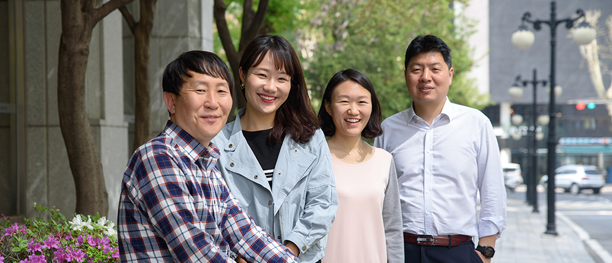

와 제 롤모델이 잡스에요!!! 아이폰 첫 출시되고 나서부터 계속 아이폰 쓰고 있는데 잡스가 너무 그리워요ㅠㅠ 지금은 돈만 벌려고 하는 것 같아서 디자인 발전도 없고ㅠㅠ와 제 롤모델이 잡스에요!!! 아이폰 첫 출시되고 나서부터 계속 아이폰 쓰고 있는데 잡스가 너무 그리워요ㅠㅠ 지금은 돈만 벌려고 하는 것 같아서 디자인 발전도 없고ㅠㅠ와 제 롤모델이 잡스에요!!! 아이폰 첫 출시되고 나서부터 계속 아이폰 쓰고 있는데 잡스가 너무 그리워요ㅠㅠ 지금은 돈만 벌려고 하는 것 같아서 디자인 발전도 없고ㅠㅠ와 제 롤모델이 잡스에요!!! 아이폰 첫 출시되고 나서부터 계속 아이폰 쓰고 있는데 잡스가 너무 그리워요ㅠㅠ 지금은 돈만 벌려고 하는 것 같아서 디자인 발전도 없고ㅠㅠ와 제 롤모델이 잡스에요!!! 아이폰 첫 출시되고 나서부터 계속 아이폰 쓰고 있는데 잡스가 너무 그리워요ㅠㅠ 지금은 돈만 벌려고 하는 것 같아서 디자인 발전도 없고ㅠㅠ
스페셜 인터뷰
PI추진팀
미래 성장동력을 이끄는 혁신의 요람
하늘 아래 새로운 것은 없다지만, PI추진팀에는 있다. 기실 PI(Process Innovation)추진팀이라는 이름에서 이미 조직의 성격을 만천하에 천명한 것이나 다름없다. 미래 기술에 대응하는 전진기지답게 PI추진팀 안에는 혁신적이고 역동적인 에너지로 꽉 들어차 있다.
글윤진아
사진김선재
‘Brand New 현대상선’의
성장엔진
디지털 트랜스포메이션(Digital Transformation)이 해운업의 성패와 존립을 좌우할 화두로 떠올랐다. 현대상선도 4차 산업혁명 시대에 부응할 전담팀을 신설하고 글로벌 경쟁력 강화에 나섰다.
PI추진팀은 지난해 8월 1일 신설된 팀으로, 현대상선의 대내외 업무 프로세스와 IT 시스템을 혁신하는 임무를 맡고 있다. 이를 위해 현대상선은 최근 인프라 구축·운영 전문가, 정보·보안 전문가, 비즈니스 분석 전문가, 소프트웨어 프로그래머 등 각 부문 핵심 전문가들을 대거 영입했다. 분야별 최정예요원이 모인 PI추진팀은 AI, IoT, 클라우드, 빅데이터 솔루션 등의 첨단기술을 현업에 융합해 효율적인 업무 시스템을 구축하고, 현재 프로세스를 개선하는 작업을 병행 중이다. RPA(Robotics Process Automation) 기술을 접목해 임직원들이 더욱 고차원적인 업무에 몰입할 수 있도록 돕는 시스템도 마련하고 있다.
PI추진팀 박상훈 팀장은 “전방위적인 디지털 트랜스포메이션을 통해 기업과 구성원은 질적으로 높은 데이터에 접근해 보다 생산적인 성과를 도출할 수 있을 뿐만 아니라 비용도 대폭 절감할 수 있다”고 설명했다. “2~3년 전만 해도 먼 미래의 이야기 같았던 4차 산업혁명은 더 이상 다른 나라의 이야기도, 다른 기업의 이야기도 아닙니다. 글로벌 해운업계는 지금 블록체인, 인공지능, 클라우드 컴퓨팅 등 IT 기술을 기반으로 한 근본적인 혁신에 사활을 걸고 있어요. 가령, 블록체인은 해운업에서 가장 중요한 물류 가시성 확보에 최적화된 기술이죠. 글로벌 공급망 관리, 거래 신뢰성 제고로 연결돼 해운·물류업계에 큰 변화를 가져올 것으로 예상됩니다. 실제로, 해운업계에 블록체인 기술이 전면 도입되면 까다로웠던 서류 문서 작업이 대폭 간소화되고, 효율성이 크게 높아져 무역 거래가 쉬워집니다. 이제 혁신은 선택이 아닌 필수가 됐습니다. 우리 회사도 올 상반기를 목표로 블록체인 기술을 실제 업무에 적용할 비즈니스 모델을 개발 중인데요. 이를 통해 중장기 선대 확충에 대비한 차세대 플랫폼 개발과 사이버테러에 대비한 정보 보안도 강화한다는 복안입니다.”
혁신으로 ‘성장 추진 동력’
끌어올린다
모름지기 ‘한 명의 천재보다 뛰어난 집단지성’은 이들을 두고 하는 말일 것이다. 각 부문 베테랑이 모인 인재 풀의 조타수로서 박상훈 팀장은 시시각각 변하는 글로벌 정세에 빠르게 대응하며, 고비마다 명확하게 좌표를 설정하고 있다. 기술이 아무리 발전해도 결국 조직을 움직이는 것은 사람이다. 굵직한 업무 틈틈이 박상훈 팀장이 구성원 한 명 한 명의 고민과 소통에 관심을 기울이는 이유다.
PI추진팀이 추구하는 인재상은 명료하다. ‘통섭형 혁신가’가 되면 된다. 언제 어디서나 매의 눈을 가동하고 개선할 거리를 찾아내며, 집요하게 파고들어 조직을 더 나은 길로 이끄는 완전무결한 대안을 제시해야 한다. 뿐만 아니다. 조직의 모든 분야에 통달해야 전사 혁신활동도 가능한 법! 원활한 혁신 직무 수행을 위해 각 부서 실무자들 못지않은 전문지식 함양에 공을 들이는 ‘집요한 혁신가들’ 덕분에 현대상선의 성장판은 좀 더 단단 해지고 있다.
“기본적으로 해운 비즈니스에서 혼자서 혹은 한 팀에서 할 수 있는 일은 거의 없습니다. 특히 전사 프로세스와 IT 시스템을 혁신하는 일은 여러 팀이 참여하는 일이며, 당연히 각 팀의 생각과 입장이 다를 수 있지요. 때문에 이를 잘 조율해 각 현장에서 만족할 수 있는 결과물을 만들어내는 인재가 필요합니다. 나만이 옳다는 생각을 버리고 다양성을 인정하며 협업하는 건 기본 중의 기본이죠. 여기에, 이른바 ‘PI형 인재’다운 개혁 성향을 내재해, 불합리하거나 불편한 일은 지나치지 않고 개선하려는 의지가 강해야 하죠.”
PI추진팀은 ‘혁신을 위한 혁신’이 아니라 ‘현업에 실질적인 도움을 주는 개선’을 목표로 쉬지 않고 달려왔다. 개선할 거리를 끊임없이 찾아 나서는 ‘PI형 인재’들의 미션은 지금 이 순간도 멈추지 않고 진행 중이다. 현대상선의 미래 성장동력을 찾아 나선 이들이 내린 결론은 지체하지 말고 필사적인 각오로 최고의 성과를 내야 한다는 것! 변화의 방향을 미리 재단할 필요는 없다. 다만, 함께 신작로(新作路)를 일구며 새 지도를 만들어 나가는 혁신가들로 인해 한층 스마트한 미래가 열리고 있다는 사실만큼은 확실해 보인다.
Mini Interview
더 편하게 일하면서 생산성도 높이는 ‘PI형’ 모범답안
박상훈 팀장
4차 산업혁명 시대에 기업의 경쟁력은 IT 기술, 그리고 사람에 있습니다. 우리 회사는 지금 지속 가능한 성장으로 가는 중대한 전환점에 서 있습니다. 이제 기존에 추구해온 변화보다 한층 강도 높은 변혁이 요구되고 있지요. 전 임직원이 더욱 즐겁고 효율적으로 일할 차세대 프로세스를 구축해, HI2020의 성공적인 론칭과 글로벌 대형 선사들과의 경쟁에서 이길 동력을 차곡차곡 마련하겠습니다. 방향을 잡았으니, 이제 속도를 높여나갈 차례입니다!


신용찬 차장, 조아영 과장, 송현애 과장, 조용인 차장
4
4
PI추진팀
팀원들의 한마디!
운영 파트
-
신용찬 차장
방탄소년단 노래를 좋아하는 꽃중년 신 차장입니다. 맡은 역할을 잘 수행하고, 힘든 동료의 손을 잡아줄 수 있는 든든한 구성원이 되도록 노력하겠습니다.
-
조아영 과장
팀 내에서 분위기 메이커를 담당하고 있습니다. 팀원 개개인이 가진 전문 지식이 다른 만큼 서로 배울 점이 많다고 생각합니다. 좋은 결과물이 나올 수 있도록 팀 내부적으로 활발한 소통이 이루어지면 좋겠습니다.
-
송현애 과장
전에 없던 시도인 만큼 기준점이 없어 고생도 많지만, 업무를 공유하고 아이디어를 합치면서 하루하루 한수 위 솔루션을 도출하고 있습니다.
-
조용인 차장
저의 커뮤니케이션 노하우는 ‘간단한 농담’입니다. 특히 초기에는 즐거운 대화상대가 되고자 개그감각을 한껏 끌어올리죠. 주장하기보다 듣는데 집중하려고 노력하고요.
#Tag
- #PI추진팀 #박상훈 #디지털트랜스포메이션
-
최고예요
322
-
좋아요
322
-
슬퍼요
322
-
그저 그래요
322
-
화나요
322